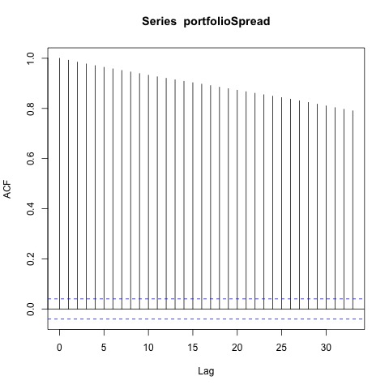
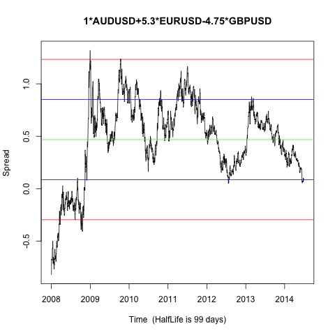
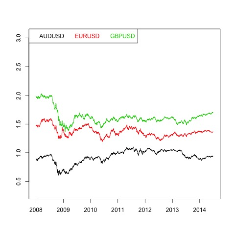

Johansen-Procedure "" "10pct" "5pct" "1pct" "r <= 2 |" 5.06 7.52 9.24 12.97 "r <= 1 |" 16.7 17.85 19.96 24.6 "r = 0 |" 32.71 32 34.91 41.07 "AUDUSD.l2" "EURUSD.l2" "GBPUSD.l2" "constant" "AUDUSD.l2" 1 1 1 1 "EURUSD.l2" 5.3 20.02 -0.37 -1.13 "GBPUSD.l2" -4.75 0.39 0.22 -0.05 "constant" -0.53 -28.5 -0.81 1.08
Augmented Dickey-Fuller Test p-value 0.260016863802828  